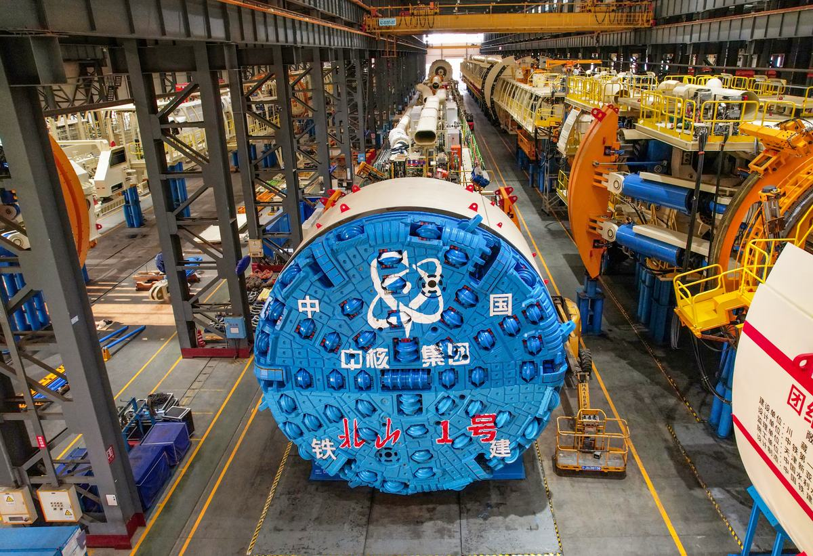
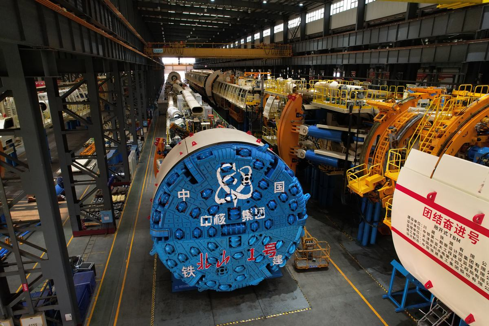
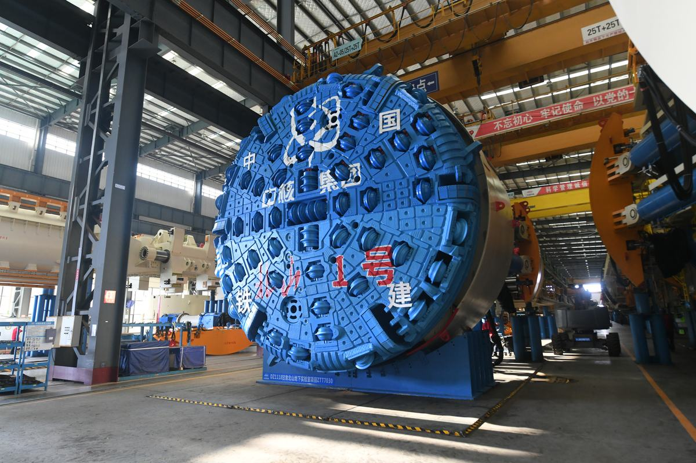

长距离极硬岩螺旋斜坡道TBM具备极硬岩开挖、空间螺旋掘进等功能，具有安全、环保、高效等优点，可广泛应用于国防地下工程、矿产资源开发、城市地下空间、交通基础设施等工程建设。
长距离极硬岩螺旋斜坡道TBM核心技术难度大，产品附加价值高，是先进掘进机技术的典型代表。在项目成立之初，TBM设计制造的核心技术为国外企业掌握，国内掘进机市场为国外设备占领，装备严重依赖进口，价格昂贵且技术服务、工程建设受制于人。另外，相当数量的进口掘进机设备在使用过程中暴露出不能很好适应我国地质和施工国情的问题，导致综合施工效率低、施工风险大等一系列问题。因此，急需研制具有自主知识产权的TBM。
本项目组针对长距离极硬岩螺旋斜坡道TBM施工过程中面临的“掘进难、转弯难、出渣难”等施工痛点难点，联合国内优势单位，历经多年持续攻关，攻克了TBM设计、制造和施工系列核心技术，取得多项技术创新成果：
①攻克了极高强度硬岩地质破岩技术，解决了“掘进难”的技术难题；②攻克了连续螺旋下坡掘进关键技术，解决了“转弯难”的技术难题；③攻克了长距离斜坡带式输送技术，解决了“出渣难”的技术难题。
项目申请发明专利20余项，获湖南省科技进步一等奖、中国专利金奖、中国产学研合作创新成果奖二等奖、中国铁建股份有限公司科学技术奖特等奖等奖项。自主研制了全球首台大坡度螺旋隧道掘进机“北山1号”、全球首台大倾角可变径TBM“天岳号”、“平江号”等TBM，应用于北山地下实验室、平江抽水蓄能等多个高难度重点工程。打破了国外垄断，实现了产业化，推动了TBM与其配套的施工技术的进步，使我国成为掘进机设计制造和地下工程建设强国。
为满足国家《中华人民共和国国民经济和社会发展第十四个五年规划和2035年远景目标纲要》、《高端装备制造业“十二五”规划》、《中长期科学和技术发展规划纲要（2006-2020年）》、《关于加快推进四化两型社会建设的指导意见》等纲领性文件中关于重点发展高端装备制造业的政策要求，结合国家重大工程需求，特别是地下空间开发需要，瞄准TBM装备技术方向研究的前沿课题，在消化吸收国外先进掘进装备技术的基础上，开展长距离极硬岩螺旋斜坡道TBM关键技术与工程应用研究，填补国内空白，增强我国TBM领域的自主研发和制造能力，提供国家深地空间开拓急需的TBM装备。
本项目针对极硬岩空空间螺旋掘进过程中面临和产生的主要问题和施工风险，开展极高强度硬岩地质破岩技术、连续螺旋下坡掘进关键技术、长距离斜坡带式输送技术研究工作，使TBM核心技术和装备性能达到国际领先水平。
TBM是掘进装备领域的重要产品，体现着我国掘进装备研制技术水平；自主掌握长距离极硬岩螺旋斜坡道TBM关键设计技术，填补国内空白、提升国家先进装备制造水平、完善我国掘进装备产品系列及培养更多高端技术人才和打造高端装备技术产业链等具有战略意义。
项目针对长距离极硬岩螺旋斜坡道TBM施工中面临的连续极硬岩开挖、立体式小转弯掘进、长距离空间螺旋出渣等众多施工难点进行针对性设计，采用成熟的总体自主设计与系统集成技术以及关重零部件的设计和加工制造技术，取得创新成果如下：
针对长距离完整极硬岩掘进特点，基于CSM模型和临空面破岩理论，提出极硬岩条件下滚刀刀间距、贯入角度、刀高差等刀具布置参数对破岩效率的匹配规律，研究下坡掘进工况下平面、锥面和球面等刀盘构型的载荷特性和分布规律，揭示地质参数、滚刀排布、掘进参数、盘体构型对刀盘性能的影响；提出基于材料耐磨及焊接性能的优化焊接工艺及组合式耐磨布置方法，开发一套适用于极硬岩空间掘进的异型刀盘；建立以破岩效率、结构强度及耐磨性能为目标参数的刀盘综合性能评价体系，实现极硬岩工况下TBM高效连续破岩。
针对水平转弯和竖直转弯结合的空间螺旋掘进方式，结合直线、曲线、过渡曲线三种隧道轴线特点，建立了TBM主机支撑-推进-换步运动学和动力学模型，提出了适应小转弯工况的主机系统设计方法，分析在直线和转弯工况下主梁、撑靴、主推油缸等构型间的相对运动关系，提出了基于多油缸组协同控制的位姿纠偏和步进规划方法，建立匹配多种隧道轴线的姿态自适应推进系统，有效提升TBM对于小转弯工况的适应性，实现TBM大坡度小转弯工况下的精准掘进。
针对长距离螺旋形出渣系统独有的皮带内外受力不均、转弯易跑偏的特点，开发了适用于螺旋出渣工况的皮带设计技术和布置方法，研究出渣系统纠偏装置及多储带装置结构设计技术，搭建适应长距离螺旋下坡工况的出渣系统以及与之匹配的控制系统和多点位协同驱动系统，提出皮带机自动纠偏方法和多储带作业工艺流程和规范，开发出渣系统状态实时监测及故障预警系统，实现出渣过程的实时监测，提升长距离出渣系统作业的可靠性，实现螺旋上坡出渣工况下的连续大方量排渣。
项目申请发明专利20余项，自主研制了全球首台大坡度螺旋隧道掘进机“北山1号”、全球首台大倾角可变径TBM“天岳号”、“平江号”等TBM，应用于北山地下实验室、平江抽水蓄能等多个高难度重点工程。打破了国外垄断，实现了产业化，推动了TBM与其配套的施工技术的进步，使我国成为掘进机设计制造和地下工程建设强国。

